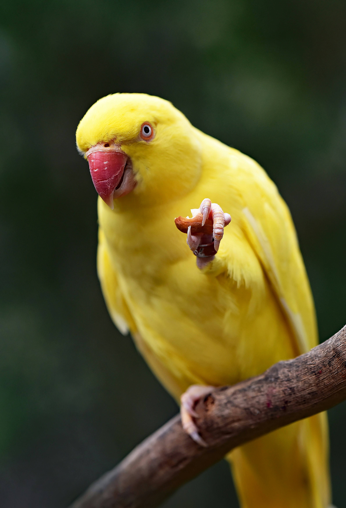

Animais Fantásticos
- 
-

-

-

Papagaio
A guaruba é uma ave vistosa, caracterizando-se por ter a plumagem inteiramente de um amarelo brilhante, salvo as pontas das asas, coloridas de verde-oliva.
Não existe dimorfismo sexual. Tem cerca de 34 cm de comprimento.
Cervo
Os cervídeos estão geograficamente bem distribuídos por todos os continentes exceto Austrália e Antártida.
O grupo distingue-se dos outros ruminantes por ter galhadas em vez de cornos.
As galhadas são estruturas ossificadas que se desenvolvem todos os anos, presentes geralmente apenas nos machos.
Os cervídeos são herbívoros com alimentação específica devido à pouca especialização do seu estômago, que não digere vegetação fibrosa como erva.
Tigre Branco
É uma das populações mais ameaçadas de extinção dentre os grandes felídeos do planeta, seja pela caça ilegal ou pela destruição de seu habitat.
Em 2018, estimou-se que havia entre 2 603 e 3 346 tigres soltos na natureza (mais da metade na Índia).
Seus números aumentaram ligeiramente nos últimos anos, porém estão bem abaixo da taxa de reposição (muito devido a caça ilegal e destruição do seu habitat natural).
Raposa do Ártico
raposa-polar, é uma pequena raposa nativa das regiões árticas do hemisfério norte e comum em todo o bioma de tundra ártica.
Está bem adaptada para viver em ambientes frios e é mais conhecida por seu pelo espesso e quente, que também é usado como camuflagem.
Na natureza, a maioria dos indivíduos não vive além do primeiro ano, mas alguns sobrevivem até 11 anos.